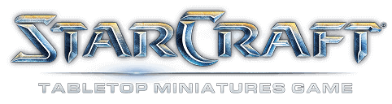

Conquer the
Koprulu Sector.
Blizzard's classic sci-fi strategy series on the tabletop - build an army of miniatures and fight as the Terran, Zerg or Protoss.
What is StarCraft?
StarCraft: Tabletop Miniatures Game is a two-player wargame from Archon Studio, made under licence from Blizzard Entertainment. You collect and paint an army of miniatures and take command of the Terran, the Zerg or the Protoss.
The rules are designed to capture the feel of the real-time strategy video game, with tactical planning in every turn.
- Publisher Archon Studio
- Players 2
- Game time 1-2 hours
- Style Sci-fi miniatures

The setting
The Koprulu Sector, a distant corner of the galaxy where three species collide.
A war across the stars
Humanity's exiles live on the edge of the galaxy, caught between two powerful alien species with very different ideas about who should survive.
Terran, Zerg and Protoss
Terran are tough, adaptable humans, the Zerg are a fast, evolving swarm and the Protoss are advanced warriors with powerful technology.
How it plays
Miniatures, terrain and tactical planning.
Pick a race
Choose the Terran, Zerg or Protoss and build an army from that race's units - from the Zerg swarm to Protoss technology.
Plan each phase
The turn sequence is simple but rewards planning, with a rhythm designed to echo the real-time feel of the video game.
Use the battlefield
Terrain affects line of sight and hiding, so smart positioning matters as much as firepower.
At the club
Ask around
Message the club and we'll put you in touch with the members who play StarCraft.
Get in at the start
The starter sets for each race came out in August 2026, so it's a good time to start collecting.
Get a game
Message the club
Tell us you play, or want to learn, and which race you like the look of.
Pick a race
Terran, Zerg or Protoss - each plays differently, so see which one grabs you.
Build and paint
Start with a starter set, then assemble and paint your first units - Wednesday club night is a good place to do it.
Play StarCraft, or want to learn? Message the club and we'll find you a game.
Pull up a chair.
No army? No problem. We'll lend you one, teach you the rules and get a brush in your hand.